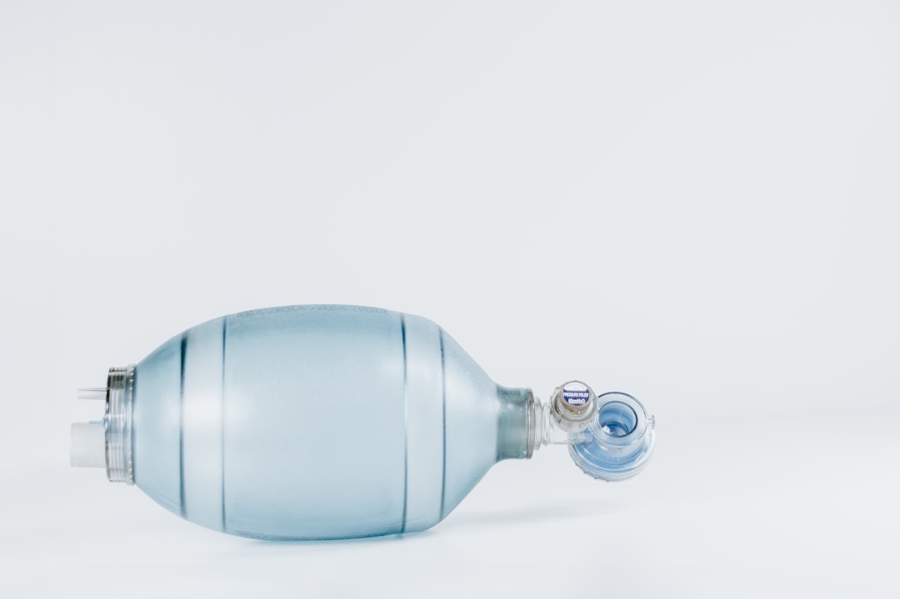
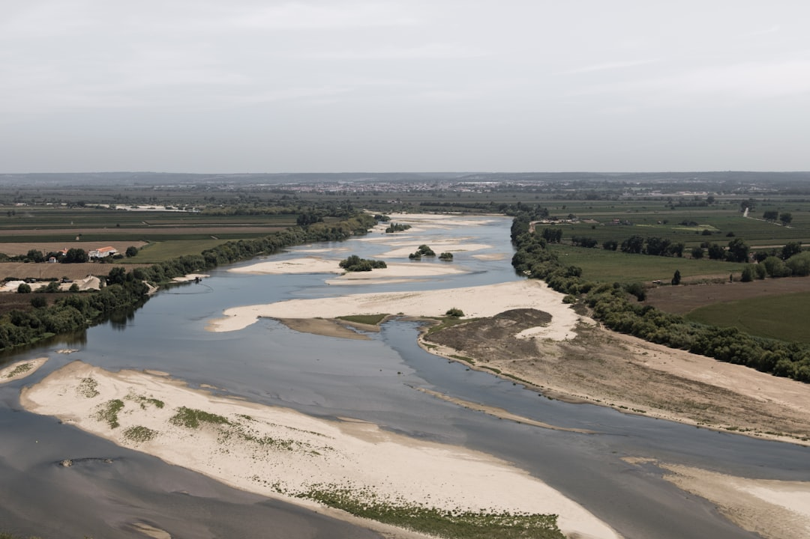
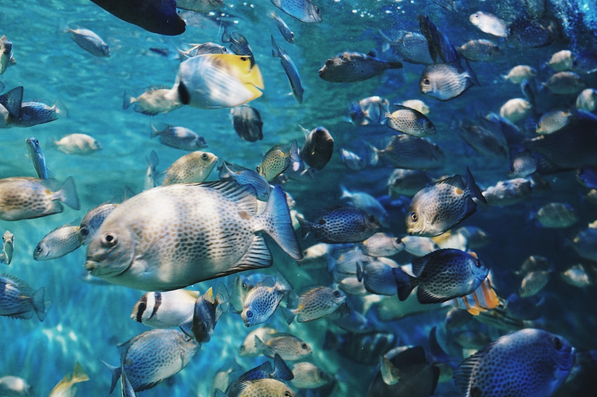

Ocean Pollution: The Invisible Threat
Introduction

Ocean pollution is one of the most pressing environmental challenges of our time. From visible plastic waste washing up on beaches to invisible microplastics entering the food chain, the health of our oceans is deteriorating at an alarming rate. The United Nations estimates that by 2050, there could be more plastic in the ocean than fish by weight if current trends continue.
This page explores the key sources of ocean pollution, why it matters for marine biodiversity and human health, and practical actions that students and communities can take to reverse the damage.
The Plastic Problem

Every year, approximately 8 million tonnes of plastic enter the ocean. Single-use items like bags, bottles, straws, and food packaging make up the majority of this waste. Once in the water, plastic breaks down into microplastics — tiny fragments less than 5mm in size — that are consumed by marine organisms from plankton to whales.
The Great Pacific Garbage Patch, a massive accumulation of floating debris between Hawaii and California, covers an area roughly three times the size of France. While cleanup efforts are underway, preventing plastic from entering the ocean in the first place is far more effective.
Students can make a meaningful difference by refusing single-use plastics, carrying reusable alternatives, and supporting brands that use sustainable packaging. Campus-wide initiatives such as plastic-free pledges and swap events can amplify individual efforts into collective impact.
Chemical Runoff and Dead Zones

Chemical pollution from agricultural fertilisers, industrial waste, and untreated sewage creates nutrient-rich conditions that lead to harmful algal blooms. When these blooms decompose, they consume oxygen in the water, creating "dead zones" where marine life cannot survive.
There are currently over 500 dead zones worldwide, affecting coastal ecosystems and the fishing communities that depend on them. The Gulf of Mexico dead zone, caused largely by agricultural runoff from the Mississippi River basin, covers approximately 15,000 square kilometres each summer.
Reducing chemical runoff requires systemic change in agricultural practices, but individuals can contribute by choosing organic produce when possible, properly disposing of household chemicals, and supporting local environmental policies that regulate industrial discharge.
What You Can Do

Protecting the ocean starts with everyday choices. Here are practical actions that students and communities can take to reduce ocean pollution:
- Refuse single-use plastics: Carry a reusable bottle, bag, and coffee cup wherever you go.
- Participate in cleanups: Join local beach or river cleanup events to prevent waste from reaching the ocean.
- Support sustainable brands: Choose products with minimal or recyclable packaging.
- Spread awareness: Share information about ocean pollution on social media and in your community.
- Advocate for change: Support policies that reduce plastic production and improve waste management infrastructure.
Every action counts. When multiplied across communities, these individual choices create the momentum needed to turn the tide on ocean pollution.